비서-2급 (2020-11-08 기출문제)
1과목: 비서실무
1. 다음 중 비서 업무에 대한 설명으로 가장 적절한 것은?
- 비서는 상사의 직접적인 감독하에 업무 책임을 져야 하는 직종이다.
- 비서는 솔선수범과 판단력을 발휘하여 상사 본연의 업무를 보좌하는 직종이다.
- 비서는 주어진 권한 범위 내에서 의사결정을 내려 업무를 처리할 수 있다.
- 비서는 보안상 주어진 모든 업무를 직접 처리해야 한다.
(정답률: 47%)

2. 다음은 현직 비서들의 자기개발 사례이다. 다음 중 가장 바람직하지 않은 것은?
- 한국건설 대표이사의 비서인 김나정은 평소 상사에게 올라오는 서류의 내용을 파악함으로써 상사의 업무를 파악하려 노력한다.
- 영도물산 이지은 비서는 매일 신문의 인사 동향을 확인하고 주요 기사는 스크랩한다.
- 미풍상사 황아영 비서는 업무 중에 틈나는 대로 회계공부를 한다.
- 왕도출판사 김영숙 비서는 비서를 대상으로 하는 커뮤니티에 가입해 같은 지역 비서들과 정기적으로 만나며 네트워크를 넓혀나가고 있다.
(정답률: 66%)
3. 상사가 열흘간의 출장 후 복귀한 경우, 비서의 전화 관련 업무태도로 가장 부적절한 것은?
- 상사의 출장 동안 걸려온 전화는 전화메모 용지에 작성하기보다 전화 기록부의 형태로 작성해서 상사에게 보고한다.
- 전화기록부를 작성해두면 상사가 출장 중에 걸려온 전화를 전체적으로 파악할 수 있을 뿐 아니라 중요한 전화를 먼저 처리할 수 있다.
- 전화기록부는 상사가 주요 발신자와 통화를 마치면 폐기한다.
- 전화 기록부에는 날짜, 시간, 전화 건 사람의 이름 및 직책, 소속, 전화메모 내용, 전화 번호 등을 포함시킨다.
(정답률: 79%)
4. 다음 중 비서의 직장 내 인간관계에 대한 설명으로 가장 적절하지 않은 것은?
- 상사의 부하 또는 직접 접촉이 없는 부서에 소속한 사람들을 회사 내에서 마주치면 굳이 자신을 소개하거나 인사할 필요는 없다.
- 동료비서의 업무가 바쁘거나 본인과 직접 관련이 있는 부서의 업무가 바쁠 때는 자신의 업무와 상사에게 지장이 없는 범위 내에서 자발적으로 협력한다.
- 마감일 전에 혼자 처리하기 힘든 일은 믿을 만한 선배나 동료에게 도움을 청할 수 있다.
- 후배의 잘한 일에 대해서는 공개적인 칭찬과 격려를 아끼지 않으며 실수에 대해서는 여러 사람의 면전이 아닌 곳에서 실수를 일깨워 준다.
(정답률: 81%)
5. 다음 전화대화를 읽고 비서의 전화업무 태도에 관한 가장 부적절한 설명을 보기에서 고르시오.
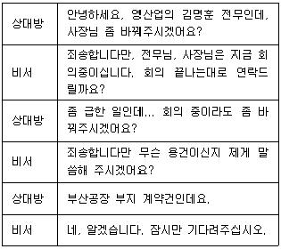
- 상대방의 소속과 이름, 용건을 메모지에 적어 회의 중인 상사가 바로 볼 수 있도록 메모지를 접지 않고 전달한다.
- 전화메모를 전달하고자 회의실에 들어갈 경우 노크를 하지 않고 조용히 들어간다.
- 상사에게 메모를 전달한 후 상사의 결정을 기다린다.
- 상대방이 대기하는 동안 전화 보류 버튼을 눌러 둔다.
(정답률: 47%)
6. 현재 시각은 11시 10분이다. 다음 상황에서 비서의 내방객 응대자세로 가장 적절한 것은?
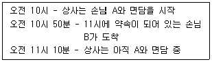
- 손님 B에게 죄송하지만 앞의 면담이 길어지고 있으니 더 기다리실 수 있는지 여쭈어본다.
- 면담 중인 상사에게 11시 약속 손님 B가 계속 기다리고 있음을 메모로 전달한다.
- 상사 면담에 방해되지 않도록 손님 B가 20분 전에 도착해서 기다리고 있음을 상사에게 문자로 알려 드린다.
- 상사가 미팅을 마무리할 수 있도록 상사 방에 들어가서 11시 약속 손님 B가 오셨음을 구두로 알린다.
(정답률: 61%)
7. 다음 중 비서의 내방객 안내 자세로 가장 적절한 것은?
- VIP 손님과 사내 임원진들의 회의 시 VIP 손님을 입구에서 가까운 창가 쪽 좌석으로 안내하였다.
- 상사의 대학교 후배 내방 시 후배부터 차를 대접하였다.
- 기사가 운전하는 차에 비서가 상사와 함께 타게 되어 뒷자리의 상사 옆좌석에 탑승하였다.
- 수동 회전문 앞에서 비서가 손님보다 먼저 들어가서 안내하였다.
(정답률: 61%)
8. 다음 중 의전의 원칙 5R을 설명한 것으로 옳지 않은 것은?
- Respect: 의전의 바탕은 상대 문화 및 상대방에 대한 존중과 배려에 있다.
- Reciprocity: 의전은 내가 배려한 만큼 상대방으로부터 배려를 기대하는 것이다.
- Rank: 의전에 있어 가장 기본이 되는 것은 참석자들 간에 서열을 지키는 것이다.
- Reflecting Culture: 의전은 시대와 문화에 따라 변하지 않고 절대적으로 지키는 원칙이다.
(정답률: 52%)
9. 강비서는 컴퓨터 일정관리 소프트웨어와 스마트폰의 일정 관리 어플리케이션을 연동하여 상사의 일정을 관리하고 있다. 이에 대한 설명으로 옳지 않은 것은?
- 일정관리 어플리케이션은 Awesome note, Ms-outlook, Jorte 등이 있다.
- 컴퓨터와 스마트폰을 연동하여 일정을 관리하므로 비서는 언제 어디서나 상사의 일정을 관리할 수 있어 효율적이다.
- 상사와 비서의 스마트폰 운영체제가 일치하여야 일정관리 프로그램과 스마트폰을 연동하여 사용할 수 있다.
- 컴퓨터 일정관리 프로그램과 스마트폰을 연동하여 사용하는 것을 일정 동기화라고 한다.
(정답률: 74%)
10. 현재는 3시 50분이다. 상사는 오늘 4시에 사내에서 회의가 있어 회의에 참석할 준비를 하고 계신다. 회의 시간이 10분 남았는데 갑자기 상사 지인이 방문하여 상사와 대화 중이다. 김 비서는 건물 내의 우체국에 금융 업무를 처리하러 갈 일도 있다. 이 때 비서의 업무 자세로 가장 적절한 것은?
- 금융업무 마감시간은 4시 30분까지이므로 손님에게 차를 대접하고 우체국으로 간다.
- 우체국 업무가 급하므로 손님에게 차를 대접하고 상사에게 4시 회의 참석하시라고 말씀드린 후 우체국으로 간다.
- 우체국 업무가 급하므로 손님에게 차를 대접할 때 상사에게 4시 회의 참석이라는 쪽지를 같이 드리고 우체국으로 간다.
- 손님에게 차를 대접하고 상사가 4시 회의 시간에 맞게 나가시는 지 확인 후 우체국으로 간다.
(정답률: 68%)
11. 골프장 예약 업무 중 중요도가 가장 낮은 것은?
- 라운딩 일자에 우천 예보가 있어서 경기 취소 규정을 확인한다.
- 주중 이용료와 주말 이용료 차이가 있는지 확인한다.
- 골프장 예약 전에 라운딩 동반자들의 실명을 반드시 확인한다.
- 골프장 예약 전에 상사가 선호하는 tee off time을 확인한다.
(정답률: 46%)
12. 상사의 출장일정표 작성 업무에 관하여 가장 올바르게 설명한 것은?
- 상사 해외 출장 시 출장일정표의 일시는 우리나라 일시와 현지 일시를 동시에 표기해야 한다.
- 출장일정표 작성 시 글자를 작게 해서라도 일정을 한눈에 볼 수 있게 한 장의 표로 작성한다.
- 상사의 스마트기기에 출장일정을 연동해 두어 상사가 언제 어디서나 출장일정을 확인할 수 있도록 해 둔다.
- 출장 일정표에는 보안상 숙소의 이름이나 면담자 성명과 연락처 등 상세한 정보는 기재하지 않는다.
(정답률: 69%)
13. 다음 중 가장 올바른 화법은?
- “다음 순서로, 회장님의 축사가 있으시겠습니다.”
- “실례가 안 된다면 상무님의 자녀는 몇명이신가요?”
- “죄송합니다만, 사장님께서 급한 사정으로 참석이 힘들다고 말씀 전해달라 하셨습니다.”
- “제가 회장님실로 안내해 드리겠습니다.”
(정답률: 58%)
14. 다음 그림은 회의의 한 형태를 나타낸 것이다. 특정 의제에 대한 해당 분야 전문가가 자신의 의견을 발표하고 청중이나 사회자로부터 질문을 받아 답변하는 형식의 회의 명칭으로 올바른 것을 고르시오.
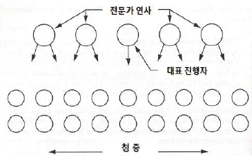
- 패널
- 심포지움
- 워크숍
- 세미나
(정답률: 49%)
15. 상사 해외 출장 시 선물을 준비할 때 고려해야 할 사항으로 잘못된 것은?
- 영국은 시계를 선물하는 것은 시간보다 중요한 것은 없다는 긍정적 의미이므로 선물해도 무방하다.
- 중국은 시계를 선물하는 것은 '시계를 선물한다'가 '장례를 치르다'는 의미인 쑹중(送終)과 발음이 같으므로 이제 관계를 끝내자는 의미로 부적절하다.
- 중국은 신발을 선물하는 것은 신발의 발음이 셰(鞋)로 사악하다는 의미인 셰(邪)와 발음이 같아 부적절하다.
- 일본에 한국 도자기를 선물하는 것은 역사적인 의미를 담으므로 금기시 된다.
(정답률: 62%)
16. 다음 대화 내용을 읽고 비서의 업무 자세로 가장 바람직하지 않은 것은?
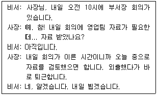
- “사장님, 영업팀에 연락해서 가능한 빨리 자료 제출 요청하도록 하겠습니다.”
- “사장님, 자료 받았습니다. 사장님께 이메일로 발송하였고 출근하시는 대로 보실 수 있도록 프린트해 놓겠습니다.”
- “사장님, 영업팀에서 자료가 늦어져서 마치는대로 사장님께 이메일로 송부한다고 합니다.”
- “사장님, 조금 전에 자료 받았습니다. 내일 검토하실 수 있도록 준비해 두겠습니다.
(정답률: 49%)
17. 다음 중 올바른 한자로 짝지어진 것은?
- 직급: 科長, 局長
- 경사: 榮轉, 昇進
- 조사: 弔義, 賻儀
- 부서: 企劃室, 營業府
(정답률: 40%)
18. 다음 중 보고 업무 자세로 가장 적절하지 않은 것은?
- 문장을 간략하게 육하원칙에 의거하여 요점 중심으로 작성하였다.
- 보고서는 가능한 한 장으로 작성하고, 기타 필요한 내용은 별첨으로 처리하였다.
- 입수한 자료가 불충분하여 개인적 추측을 더해 보고서를 작성하였다.
- 구두 보고 시 상사가 궁금해 하는 내용을 먼저 보고하였다.
(정답률: 75%)
19. 비서의 상사 이력서 관리 원칙으로 가장 적절하지 않은 것은?
- 새로운 내용이 추가되어야 할 때는 상사 이력을 수정하고 수정한 일자를 기록해 둔다.
- 상사의 이력은 상사의 허락을 받은 후 대내외에 공개할 수 있다.
- 대내외에 공개할 때는 모든 경력이 기재된 이력서 원본을 공개하는 것이 좋다.
- 전임자에게 인수인계 받은 이력서라도 학교명이나 학위 등의 정확한 표기를 다시 한 번 확인하는 것이 좋다.
(정답률: 75%)
20. 비서의 경비처리업무에 대한 설명으로 가장 적절하지 않은 것은?
- 비서실 사무용품 구입 시, 경비 지출 규정집 등을 참고하여 경비 처리 규정 준수 여부를 확인한다.
- 경비 처리 규정을 넘는 품목은 결재권자의 사전 승인을 얻은 후 구매 주문을 실행한다.
- 상사가 지출한 접대비 중 그 성격상 지출 내역을 밝힐 수 없는 비용이나 증빙을 갖추지 못한 접대비는 지출결의서를 작성해야하며 세법상 비용을 인정받을 수 있다.
- 영수증은 거래의 유효성을 뒷받침하는 증거 서류이므로 훼손되거나 분실하지 않도록 주의한다.
(정답률: 69%)
2과목: 경영일반
21. 다음의 경영환경요인은 무엇을 의미하고 있는지, 바르게 짝지어진 것은?
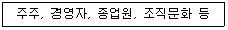
- 외부환경-직접환경
- 내부환경-간접환경
- 내부환경-직접환경
- 내부환경-일반환경
(정답률: 57%)
22. 주식회사의 장점에 대한 설명으로 가장 거리가 먼 것은?
- 소유권 이전의 용이성
- 소유권자의 유한 자본조달 책임
- 상대적으로 적은 주식회사 설립 비용
- 자본조달의 확대 가능
(정답률: 51%)
23. 다음은 기업의 외부환경 상황을 기술한 것이다. 이 중 기업간 경쟁구도분석에서 치열한 경쟁강도를 나타내는 경우로 가장 거리가 먼 것은?
- 시장점유율이 비슷한 경우
- 산업성장률이 높은 경우
- 시장진입장벽이 낮은 경우
- 대체재 수가 많은 경우
(정답률: 42%)
24. 다음 중 기업형태에 대한 설명으로 가장 옳은 것은?
- 기업은 출자의 주체에 따라 사기업, 공기업, 공사공동기업 등으로 구분된다.
- 사기업은 다시 출자자의 수에 따라 개인기업과 주식회사로 분류할 수 있다.
- 다수공동기업의 형태로는 합명회사, 합자회사, 유한회사 등이 있다.
- 국영기업, 지방공기업, 익명조합, 공사, 공단 등은 공기업의 예이다.
(정답률: 34%)
25. 다음은 대기업에 비해 상대적으로 중소기업이 겪는 어려움을 기술한 것이다. 이 중, 중소기업만의 어려움으로 보기에 가장 적합하지 않은 것은?
- 인력 확보
- 가격경쟁의 불리함
- 자금 확보
- 강력한 정부 규제
(정답률: 65%)
26. 다음이 설명하고 있는 기업으로 가장 적합한 것은?
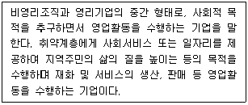
- 벤처기업
- 협동조합
- 사회적기업
- 공기업
(정답률: 63%)
27. 다음 밑줄에 공통으로 들어갈 용어로 알맞은 것은?
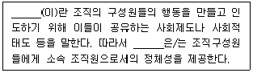
- 조직 가치
- 조직 행동
- 조직 문화
- 조직 혁신
(정답률: 61%)
28. 다음 중 경영관리 과정을 순서대로 알맞게 배열한 것은?
- 조직 - 지휘 – 계획 - 통제
- 계획 - 조직 – 지휘 - 통제
- 지휘 – 통제 – 계획 - 조직
- 조직 – 계획 – 통제 - 지휘
(정답률: 52%)
29. 다음 중 기업의 사회적 책임에 대한 설명으로 가장 거리가 먼 것은?
- 기업은 경영활동에 관련된 의사결정이 특정개인이나 사회전반에 미칠 수 있는 영향을 고려해야 하는 의무가 있다.
- 기업은 주주와 내부고객을 위해 최대이윤을 확보함으로써 기업을 유지 발전시켜야 하는 책임이 있다.
- 기업의 사회적 책임에는 기업의 유지 및 발전에 대한 책임, 환경에 대한 책임, 공정경쟁의 책임, 지역사회에 대한 책임 등이 포함된다.
- 기업이 사회적 책임을 이행하면 결국 고객과 사회로부터 신뢰와 좋은 평판을 얻게되어 기업이미지와 매출에 긍정적으로 작용할 수 있다.
(정답률: 53%)
30. 다음 중 조직형태에 대한 설명으로 가장 적합하지 않은 것은?
- 사업부제조직은 각 사업부의 성과와 기여도가 명확히 나타나므로 경영통제가 용이하다는 장점이 있다.
- 매트릭스조직은 이중적 지휘체계 때문에 구성원들의 역할갈등과 역할 모호성을 유발할 수 있다.
- 네트워크조직은 자원중복과 투자를 감소시켜 적은 자산과 인력으로 기업을 운영할 수 있다는 장점이 있다.
- 위원회조직은 주어진 과업이 구체적이므로 책임이 명확하며 의사결정과정이 신속하고 합의가 용이하다는 장점이 있다.
(정답률: 33%)
31. 다음 중 매슬로우(Maslow)의 욕구단계이론을 저차원에서 고차원의 단계별로 나열한 것으로 가장 적합한 것은?
- 안전 욕구 → 사회적 욕구 → 성취 욕구 → 자아실현 욕구 → 존경 욕구
- 존재 욕구 → 안전 욕구 → 사회적 욕구 → 성장 욕구 → 자아실현 욕구
- 안전 욕구 → 사회적 욕구 → 권력 욕구 → 자아실현 욕구 → 존경 욕구
- 생리적 욕구 → 안전 욕구 → 사회적 욕구 → 존경 욕구 → 자아실현 욕구
(정답률: 59%)
32. 다음은 리더십의 개념과 리더십 스타일에 대한 설명을 나열한 것이다. 이 중 가장 옳지 않은 설명은?
- 경영자의 책무 중 리더십은 다른 사람을 동기부여시킴으로써 그들로 하여금 특정목적을 달성할 수 있는 활동을 하도록 하는 것이다.
- 리더십 개념은 초기에 특성이론으로 바람직한 위인의 특성을 찾고자 하는 연구였으며, 위인이론에 집중되었다.
- 전제적 리더는 다른 사람의 의사를 묻지 않고 단독으로 의사결정을 하는 스타일이다.
- 방임형 리더는 모든 의사결정과정에 부하를 참여시키며, 집단의사결정을 하는 스타일이다.
(정답률: 37%)
33. 다음 중 인사관리에서 지켜야 할 주요 원칙으로 가장 거리가 먼 것은?
- 최대 생산의 원칙
- 적재적소 배치의 원칙
- 공정한 보상의 원칙
- 공정한 인사의 원칙
(정답률: 57%)
34. 다음 중 아래의 (가), (나)에 해당하는 용어를 짝지은 것으로 가장 적합한 것은?
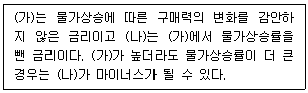
- (가) 표면금리, (나) 실효금리
- (가) 명목금리, (나) 실질금리
- (가) 기준금리, (나) 콜금리
- (가) 기준금리, (나) 대출금리
(정답률: 48%)
35. 가격관리 전략 중 기준가격의 설정내용으로 가장 거리가 먼 것은?
- 원가중심의 가격설정은 제품의 생산 및 유통과 관련된 각종비용을 기준으로 제품가격을 설정하는 것이다.
- 수요중심의 가격설정은 시장수요의 강도와 크기에 따라 제품가격을 설정하는 것이다.
- 경쟁중심의 가격설정은 경쟁제품을 기준으로 하여 가격을 설정하는 것이다.
- 할인중심의 가격설정은 신제품을 출시할 때 미리 할인해서 가격을 설정하는 것이다.
(정답률: 58%)
36. 다음 중 아래의 내용을 설명하는 용어로 가장 적합한 것은?
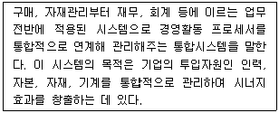
- 전사적자원관리(Enterprise Resource Planning)
- 사무자동화시스템(Office Automation System)
- 거래처리시스템(Transaction Processing System)
- 고객관계관리(Customer Relationship Management)
(정답률: 52%)
37. 다음 중 복리후생에 관련 설명으로 가장 옳은 것은?
- 복리후생은 종업원의 복지향상을 위해 지급되는 임금을 포함한 모든 경제적 급부를 말한다.
- 복리후생 중 일부는 국가의 입법에 의하여 제도화되어 강제적으로 운영되고 있다.
- 허즈버그의 이요인이론에 따르면, 경제적 복리후생은 동기요인에 해당하며 구성원의 만족에 긍정적 영향을 미친다고 할 수 있다.
- 복리후생 중 건강보험 보험료는 근로자가 일부 부담하지만 고용보험 보험료는 회사가 전액 부담한다.
(정답률: 33%)
38. 스테가노그래피(steganography)는 어떤 것을 일컫는 말인가?
- 은행계좌 추적 프로그램
- 네트웍 마비 프로그램
- 암호화해 숨기는 심층암호기술
- 스마트폰 장치 제어프로그램
(정답률: 50%)
39. 다음 중 유동자산에 해당하는 계정과목은 무엇인가?
- 이익잉여금
- 상표권
- 유가증권
- 외상매입금
(정답률: 43%)
40. 다음 중 우리나라의 금융기관의 성격을 설명한 내용으로 가장 적절하지 않은 것은?
- 한국은행은 한국은행법에 따라 설립되어 운영되고 금융기관하고만 거래한다.
- 일반은행은 금융거래를 통해 이익을 얻을 목적으로 영업하며 시중은행, 지방은행, 외국은행의 국내지점 등이 있다.
- 저축은행, 새마을 금고 등은 일반은행에서 자금 공급이 어려운 부문에 자금을 공급하는 특수은행이다.
- 신용보증기관은 기업이 금융에서 자금을 빌릴 수 있도록 보증을 서주고 대가를 받는다.
(정답률: 40%)
3과목: 사무영어
41. Which is the LEAST correct match?
- 홍보부: Public Relations Department
- 인력개발부: Human Resources Department
- 구매부: Purchasing Department
- 사업부: Accounting Department
(정답률: 49%)
42. Which is the LEAST correct match?
- CFO: Chief Financial Officer
- COD: Cash on Delivery
- BCC: Blind Carbon Copy
- N/A: Not Alone
(정답률: 50%)
43. Choose the one which has the MOST UNGRAMMATICAL part.
- We see few lightning bugs even on a farm.
- The number of foreign investors is on the rise.
- Some of the applicants arrived late for their job interview.
- All of the merchandise have tested carefully before the launch.
(정답률: 33%)
44. Which is the BEST word(s) for each blank?
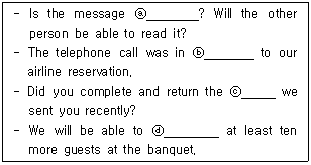
- ⓐ legible, ⓑ regarding, ⓒ question, ⓓ accommodate
- ⓐ legible, ⓑ regard, ⓒ questionnaire, ⓓ accommodate
- ⓐ vague, ⓑ regarding, ⓒ question, ⓓ accommodate
- ⓐ vague, ⓑ regard, ⓒ questionnaire, ⓓ accommodate
(정답률: 35%)
45. Which is the LEAST correct about the letter?
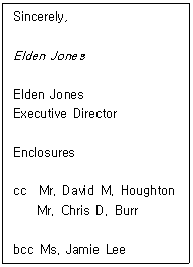
- 이 서신의 발송인은 Elden Jones이다.
- 이 서신에는 동봉물이 있다.
- 이 서신의 사본을 받는 사람은 4명이다.
- 이 서신의 내용을 Jamie Lee도 확인할 수 있다.
(정답률: 44%)
46. Choose the one which has MOST UNGRAMMATICAL part.
- 지원자들은 그 일자리에 필요한 자격요건을 갖추어야 한다.
→ Candidates should meet the qualifications for the job. - 신입사원들은 일주일 동안 교육을 받을 것이다.
→ New employees will receive training for a week. - 전 직원은 월요일마다 회의에 참석한다.
→ All staff members attends a meeting for Monday. - 방문객은 접수원에게 신분증을 제시해야 한다.
→ Visitors have to show the receptionist an identification card.
(정답률: 45%)
47. According to the following conversation, which one is TRUE?
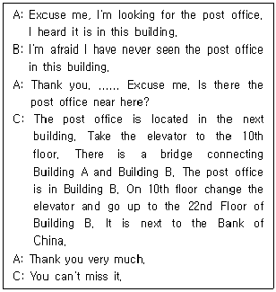
- Post office is on the 22nd floor of Building A.
- The Bank of China is behind the post office
- You can't find post office around here.
- There is a connecting bridge between Building A & B on the 10th floor.
(정답률: 55%)
48. Below is the email from hotel A regarding the conference preparation. Which is LEAST correct according to the email?
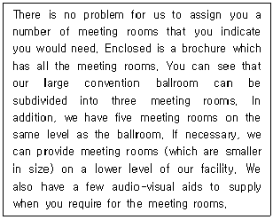
- 이 이메일에는 A호텔의 모든 회의실에 대한 안내 책자가 동봉되어 있다.
- A호텔의 대 연회장은 3개의 회의실로 재구성될 수 있다.
- A호텔은 연회장과 같은 층에 5개의 회의실을 이미 갖추고 있다.
- A호텔은 모든 회의실에 시청각 기자재를 갖추고 있다.
(정답률: 41%)
49. Which is the LEAST correct about the below invitation card?
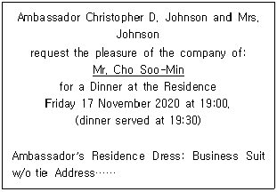
- 저녁식사는 대사관저에서 진행된다.
- 식사는 오후 7시 30분부터 시작된다.
- Mr. Cho가 행사장소에 도착하여야 하는 시간은 오후 7시이다.
- 드레스코드는 예의를 갖춘 정장차림이다.
(정답률: 32%)
50. What is LEAST proper as a phrase for conducting a meeting?
- We'll be dealing with it in a minute.
- This is Tom. May I speak to Mr. Kim?
- Excuse me, may I interrupt?
- I think we can skip point three.
(정답률: 32%)
51. Fill in the blanks with the BEST words.
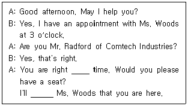
- at – say
- in - tell to
- on – tell
- by - report
(정답률: 45%)
52. According to the following conversation, what is the secretary supposed to do?
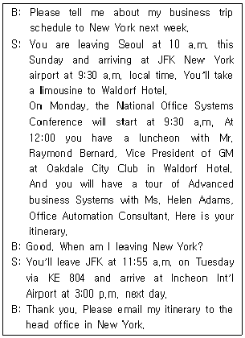
- 출장 일정표를 뉴욕 본사에 이메일로 보낸다.
- 서울-뉴욕간 왕복 비행기편을 예약한다.
- Ms. Adams에게 상사의 출장 일정표를 보낸다.
- 상사의 회의 자료를 준비한다.
(정답률: 47%)
53. According to the conversation, which of the following is MOST correct?
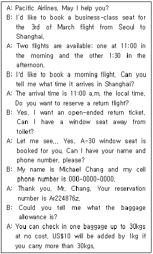
- Mr. Chang은 3월 3일 오후 비행기를 탈 것이다.
- Mr. Chang은 편도 비행기편을 예약했다.
- Mr. Chang은 상해발 인천행 귀국날짜는 결정하지 않았다.
- Mr. Chang은 2개의 수화물을 30kg까지 무료로 체크인 할 수 있다.
(정답률: 39%)
54. Which of the following is the LEAST appropriate expression for the blank?
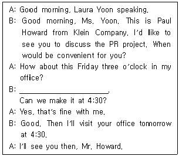
- I'm afraid I have a previous appointment then.
- I'm sorry, but I can't make it then.
- I'm sorry, but I am a little tied up at the moment.
- I'm sorry, but I will be in an urgent meeting with our buyer at that time.
(정답률: 28%)
55. Which is the LEAST correct about the discourse?
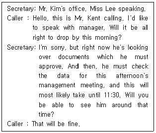
- Mr. Kim is not able to talk with Mr. Kent right now.
- Secretary is checking the schedule of Mr. Kim.
- There is a management meeting this afternoon.
- Mr. Kent is supposed to meet Mr. Kim at 11:00 a.m.
(정답률: 41%)
56. Which of the followings is the MOST appropriate expression in common?
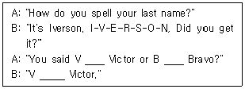
- as
- of
- for
- in as
(정답률: 31%)
57. Which of the following should you NOT do when transferring a call?
- Let the caller know the person who is being transferred.
- Be polite and professional.
- Disconnect the caller.
- Ask the caller for permission before you make the transfer.
(정답률: 44%)
58. Which is the LEAST correct according to the following guidelines?
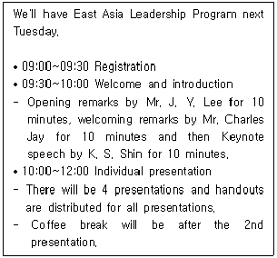
- Mr. Charles Jay의 환영사는 10분간 진행된다.
- 개별 발표는 모두 4개이며 각각의 발표마다 유인물이 제공된다.
- 매 발표 후 휴식시간이 있다.
- 프로그램 등록은 9시부터 시작된다.
(정답률: 47%)
59. Fill in the blanks with the BEST word(s).
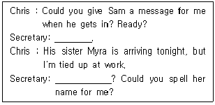
- Take. - Tied?
- Go ahead. - Excuse me?
- Go. - What?
- Set. - Go ahead?
(정답률: 52%)
60. Which is LEAST correct about the elements of envelope?
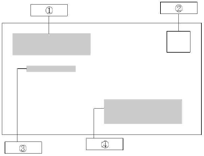
- ① return address
- ② stamp
- ③ postal code
- ④ mail address
(정답률: 36%)
4과목: 사무정보관리
61. 다음 중 문서철의 쪽 번호 표시가 가장 적절하지 않은 것은?
- 해당 문서철의 우측 하단에 첫 쪽부터 시작하여 일련번호로 쪽수 부여 및 표기한다.
- 표지와 색인목록은 쪽수 부여 및 표기 대상에서 제외한다.
- 동일한 문서철을 2권 이상으로 나누어 편철한 경우라도, 2권 이하의 문서철별 쪽수는 새 번호로 시작한다.
- 연필로 먼저 표시한 후 기록물 정리가 끝나면 잉크 등으로 표시한다.
(정답률: 32%)
62. 상공무역의 최주혁 비서는 회사의 사옥준공식 안내장을 작성했다. 안내장마다 수신인에 따라 본문 내용 중 수신인, 직위, 부서명, 회사명을 다르게 하여 보내는 방법은?
- 라벨링
- 편지병합
- 하이퍼링크
- 매크로
(정답률: 38%)
63. 박진우 비서는 다음 달에 있을 창립 기념 파티에 초대장 초안을 작성하려고 한다. 마인드맵을 이용해 내용 구상을 하는 박진우 비서의 방법이 가장 적절하지 못한 것은?
- 종이 한 가운데 원을 그리고 문서의 주제인 '창립 기념 파티초대'를 원 안에 작성했다.
- 주제와 관련한 핵심 단어를 중앙의 원과 연결된 선을 그어 배치한다.
- 핵심 단어로는 '초대 이유', '초대 장소', '초대 일시', '세부일정' 등을 작성할 수 있다.
- 마인드 맵은 문서 작성 시 일반적으로 자유로운 아이디어를 떠올리는 정보 수집 단계에서 사용한다.
(정답률: 39%)
64. 다음 중 문서관리의 목적으로 그 연관성이 가장 낮은 것은?
- 전문 문서 관리자를 통한 중요 문서의 보안에 집중할 수 있다.
- 필요한 문서를 신속하고 쉽게 찾을 수 있어 시간과 노력을 줄일 수 있다.
- 불필요한 문서를 적기에 폐기함으로써 보관 및 보존에 드는 공간을 절약할 수 있다.
- 사무 환경이 개선되고 문서 관리에 드는 비용을 절감할 수 있다.
(정답률: 29%)
65. 다음과 같이 감사편지를 작성하는 업무를 하고 있다. 이 중 가장 적절하지 않은 경우는?
- 강비서는 상사가 출장지에서 돌아온 다음날 출장지에서 신세를 진 사람에게 감사편지를 보냈다.
- 윤비서는 행사 참가자에게 참석해주신 덕분에 행사가 잘 마무리되었음을 감사하는 내용으로 보냈다.
- 최비서는 경조행사에 보내주신 경조금 금액을 정확하게 언급하면서 감사의 뜻을 전했다.
- 정비서는 행사시에 약간의 실수가 있었던 사항에 대한 사과의 말을 함께 기재해서 감사장을 완성하였다.
(정답률: 56%)
66. 다음 중 종류가 동일한 앱끼리 묶이지 않은 것은?
- 조르테, 구글캘린더
- 원드라이브, 에버노트
- 맵피, 아틀란
- 라인, 카카오톡
(정답률: 48%)
67. 다음 중 사무정보기기의 사용법이 가장 적절하지 않은 비서는?
- 김비서는 사내 인사이동에 따른 임원보직변동을 확인 후 발령일자에 맞춰 키폰 번호를 재입력하고 레이블을 교체했다.
- 이비서는 자리를 비우게 될 경우 비서실의 전화를 비서 개인의 휴대폰으로 착신하는 무료 서비스를 114에 전화해 신청했다.
- 차비서는 여분의 프린트 토너를 항상 구입해 놓는다.
- 김비서는 문서 세단기를 고칠 경우에는 항상 전원을 OFF로 해놓고 고친다.
(정답률: 41%)
68. 다음 중 행정기관에서 공문서를 작성할 때에 올바른 것을 모두 고르시오.
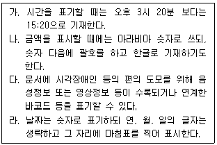
- 가, 나, 다, 라
- 가, 나, 라
- 나, 라
- 나, 다, 라
(정답률: 43%)
69. 다음 중 비서의 정보 보안 방법이 적절하지 않은 것을 모두 고르시오.
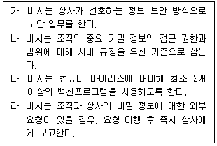
- 나, 다
- 나, 다, 라
- 다, 라
- 다
(정답률: 44%)
70. 다음 명함관리 방법 중 올바른 방법을 모두 고르시오.
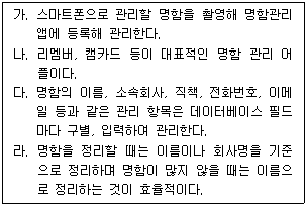
- 가, 나, 다, 라
- 가, 나, 다
- 가, 나
- 가, 나, 라
(정답률: 37%)
71. 다음 중 전자문서 보관과 보존에 대한 설명이 가장 적절하지 못한 것은?
- 종이 문서나 그 밖에 전자적 형태로 작성되지 않은 문서를 정보 처리 시스템이 처리할 수 있게 하려면 전자화 문서로 변환한다.
- 전자 문서 장기 보존을 위해서는 전자 문서 장기 보존 국제표준 PDF/A 형식으로 변환하여 저장한다.
- 전자 문서의 폐기는 복원이 불가능하게 재포맷하거나 덮어 쓰기를 통해 파괴하여야 한다.
- 전자문서는 보존이 용이하므로 종이문서보다 보존기한을 더 길게 적용한다.
(정답률: 40%)
72. 다음 중 행정기관의 공문서의 접수에 관한 내용이 가장 적절하지 않은 것은?
- 전자문서시스템에서는 문서등록번호나 접수번호가 자동으로 표시되며 시스템 오류의 경우라도 수기로 표시하지 않는다.
- 행정상 공문서는 행정기관 또는 공무원이 직무상 작성하고 처리한 문서 외에 행정기관이 접수한 문서도 포함된다.
- 문서과는 행정기관내의 공문서 분류·배부·수발업무지원 및 보존 등 문서에 관한 사무를 주관하는 과를 뜻한다.
- 처리과는 문서의 수발 및 업무 처리를 주관하는 과로서 행정기관 내에 설치된 각 과를 말한다.
(정답률: 47%)
73. 프레젠테이션을 작성할 때 고려해야할 사항과 가장 거리가 먼 것은?
- 프레젠테이션의 목적이 설득인지, 정보제공인지, 오락기능인지 등을 파악한다.
- 여러 장의 자료를 준비할 때는 가급적 각 장마다 형식을 통일한다.
- 'One page, One message' 원칙을 지킨다.
- 한 장에 되도록 많은 그림과 글을 채워 넣어 청중의 관심을 불러일으킨다.
(정답률: 58%)
74. 회사 홈페이지나 블로그 등을 비롯한 소셜미디어를 관리하는 김 비서가 주의를 기울여야 할 태도로 가장 적절하지 않은 것은?
- 회사의 블로그나 페이스북에 답변 댓글을 게재할 때는 회사에서 제시한 규정이 있을 경우 이를 따른다.
- 사내에서 작성한 이메일 뉴스레터는 가입한 모든 회원에게 무조건 전송한다.
- 회사 소식과 관련된 페이스북 페이지의 좋아요 버튼을 누를 때는 글의 성격에 따라 신중하게 행동한다.
- 회사 홈페이지에 게시되는 내용 중 부적절한 내용은 관련 부서와 의논하여 규정에 따라 처리한다.
(정답률: 56%)
75. 다음 중 컴퓨터 바이러스를 예방하기 위한 비서의 행동으로 가장 적절하지 않은 것은?
- 김비서는 인터넷에서 다운 받은 파일은 반드시 바이러스검사를 수행한 후 사용한다.
- 박비서는 USB메모리 자동실행을 활성화하였다.
- 이비서는 바이러스 예방 프로그램을 램(RAM)에 상주시켜 바이러스 감염을 예방한다.
- 황비서는 최신 버전의 백신 프로그램을 사용하여 주기적으로 검사를 한다.
(정답률: 57%)
76. 다음 기사에 관한 내용으로 가장 적절하지 않은 것은?
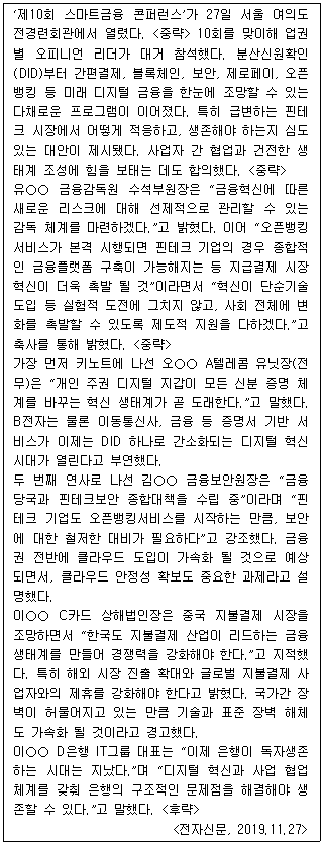
- 이번 행사는 미래 디지털 금융을 조망하고, 핀테크 시장에서 적응과 생존에 대한 의견이 제시되었다.
- 증명서 기반 서비스가 이제는 분산신원확인으로 간소화될 것이라고 예측하였다.
- 핀테크 기업에서도 오픈뱅킹 서비스를 제공하게 되어 보안이 더욱 중요해졌다.
- 보안을 위해 제휴와 협업보다는 독자적인 혁신과 사업추진을 통해 생존전략을 수립해야 한다.
(정답률: 47%)
77. 다음과 같이 보고서에 들어갈 그래프를 작성하고 있다. 전달하려고 하는 내용을 표현할 수 있는 그래프를 가장 적절하게 활용하고 있는 경우는?
- 5년간의 매분기별 매출액의 추이를 비교하기 위해서 가로막대 그래프를 작성하였다.
- 1년동안 매월 주요생산품의 매출액 구성 비율을 비교하기 위해서 띠그래프를 작성하였다.
- 6월 30일자로 각 지사별 매출금액을 비교하기 위해서 꺾은선 그래프를 작성하였다.
- 10월말일 기준으로 이동통신회사들의 시장점유율 비교를 위해서 세로막대 그래프를 작성하였다.
(정답률: 27%)
78. 김은정 비서는 전산 회계 시스템에서 출장비 회계 처리 업무를 수행하고 있다. 다음 중 가장 적절하지 않은 것은?
- 출장 전 회사에서 현금 400,000원을 가지급하였고, 여비 정산 후 여비 부족액은 개인이 부담한다.
- 지출 내역 중 주차비, 주유비, 식비, 교통비는 여비 교통비로 처리한다.
- 거래처에 대한 선물비용은 접대비로 처리한다.
- 시내 여비 교통비와 같이 증빙이 없는 경비는 회사 내부 품의서나 여비지출결의서 등을 작성하여 결재받아 증빙으로 사용할 수 있다.
(정답률: 50%)
79. 전자 문서 관리 절차의 단계에 대한 설명으로 잘못 제시된 것은?
- 이관: 전자 문서의 관리 및 소유 권한이 내부에서의 이전, 외부로의 이전에 따라 전자 문서를 비롯한 모든 관리 정보를 물리적으로 이전하는 것
- 보존: 보관 기한은 만료되었으나 업무상 기타 보존의 필요로 인해 일정 시점(보존 기간)까지 저장하고 관리하는 것
- 등록: 전자 문서가 관리되기 위해서 정보 처리 시스템에 공식적으로 저장되는 과정
- 분류: 전자 문서가 진본으로서 신뢰받을 수 있도록 변형이나 훼손으로부터 보호받으며 필요할 때, 이용 가능한 상태로 정보 처리 시스템에 저장되어 관리하는 과정
(정답률: 51%)
80. 다음 중 문서작성을 위한 정보 수집에 대한 설명이 가장 적절하지 못한 것은?
- 최비서는 받은 문서에 대한 회신을 하기 위해 해당 기관과 이전에 왕래했던 서신을 검토했다.
- 이비서는 보고서를 작성할 때 공신력 있는 기관의 발표자료와 통계자료, 연구 자료 등을 수집했다.
- 김비서는 감사장을 작성할 때 감사해야할 상황에 대해서 시간, 장소, 인물, 내용 등에 관한 정보를 수집했다.
- 고비서는 보고서 작성을 위한 정보를 세부적인 것에서부터 큰 정보 순서로 수집했다.
(정답률: 54%)